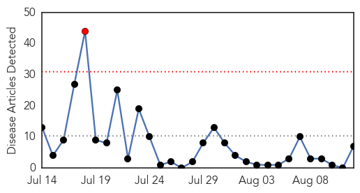

30 Day Trends
Web: 1 alerts, 0 warnings
Twitter: 0 alerts, 0 warnings
Top Articles:
- 0.996
- Chikungunya virus detected in Argentina
- 0.992
- Asian Tiger Mosquito Could Expand Painful Caribbean Virus into U.S.
- 0.962
- Mississippi reports 1st West Nile virus death in Yazoo County, additional imported chikungunya case
- 0.888
- First WNV Death this Year in Mississippi
- 0.843
- CDC Official: FL Lags in HPV Vaccination
- 0.842
- CDC in Tampa to urge more HPV vaccination
- 0.722
- Health Ministry says case at UWI not confirmed as chikungunya
Top Tweets:
-
No tweets found for Aug 12, 2014
Web/News Articles
Tweets

Article Locations